D2R-DK 使用说明
文档 v1.6.0 · 对应 D2R-DK v0.1.9
这是什么
D2R-DK 是 Windows 上的《暗黑破坏神 II：重制版》多开工具，一台电脑可以同时开多个账号。勾选账号后点一下，就能批量打开。国服账号用 Token 或战网登录，国际服用战网账号和密码。
有什么功能
多开、批量启动、窗口布局、TZ / DC 监控等基础功能都能用；8PP 批量多开、快速启动模式、宝宝巴士、墨水屏推送是 Pro 高级功能，激活后可用。正式版无内置试用，试用码须向作者申请，完整对照见「激活」。
快速上手
- 打开 D2R-DK。第一次要设「程序锁密码」，以后每次打开都要输入。忘了找不回。
- 点账号列表上方的「+ 新建」，添加一个账号（见下一节）。
- 在账号前面打勾。勾 2 个以上，就能一起开。
- 点左下角的「批量启动（N）」，N 是勾选的个数。没勾或只勾 1 个时，点「▶ 启动」，开的是高亮的那个号。
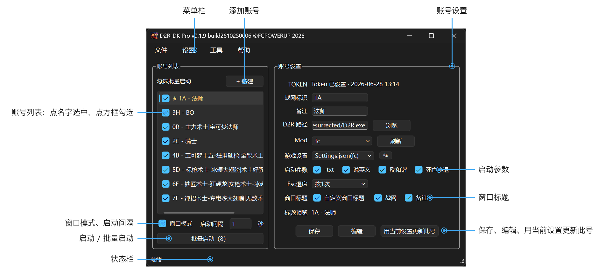
添加账号
国服：Token 登录（战网老用户）
- 点「+ 新建」，在「TOKEN」一行点「获取」，会打开战网登录页。浏览器没打开，就点「复制战网链接」，粘贴到浏览器里。
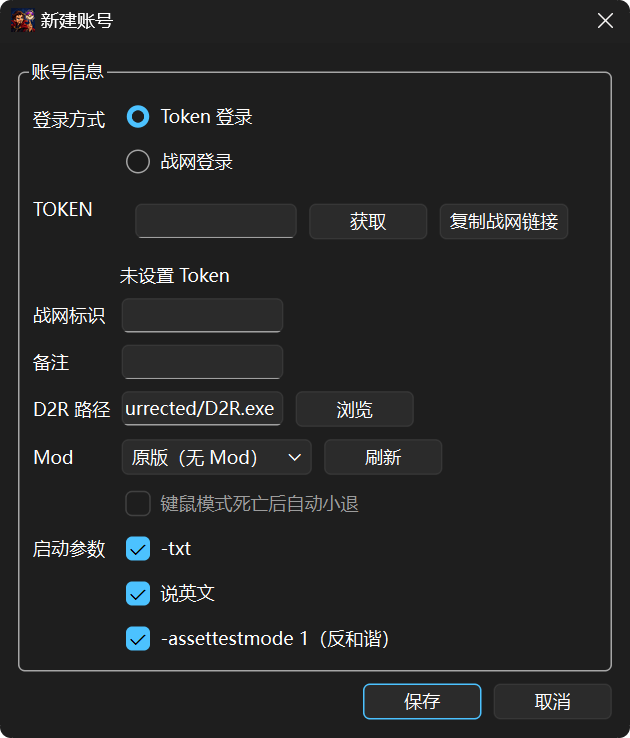
- 用战网账号登录。登录成功后，地址栏里会出现
ST=。

ST= 开始的整段- 粘贴到「TOKEN」框。
- 填「备注」，在「D2R 路径」点「浏览」选中国服客户端的
D2R.exe，点「保存」。
国服：战网登录（新用户）
- 登录你的国服战网客户端，保持战网账号在登录状态。
- 在 D2R-DK 点「+ 新建」，「登录方式」选「战网登录」，点「记录当前战网账号」。记录完成后战网会自动退出。
- 填「备注」，在「D2R 路径」点「浏览」选中国服客户端的
D2R.exe，点「保存」。 - 建议在战网的设置里，把「点击 X 时」改为「完全退出战网」。
- 其他想多开的号，按第 1～3 步逐个添加。
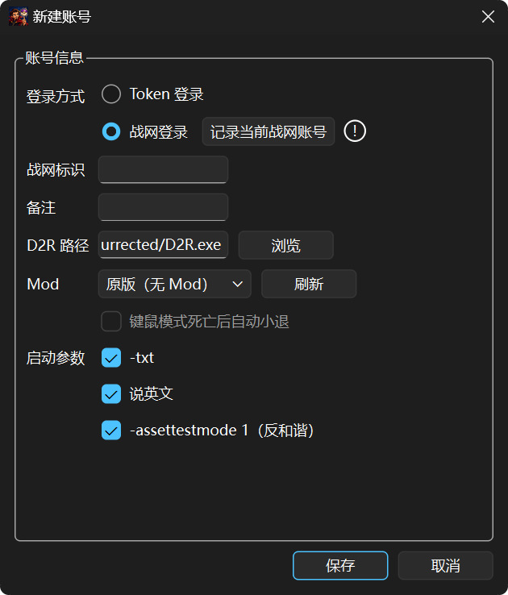
战网国服模式的账号一旦添加，请勿再从战网里启动该账号，否则账号会失效，需要再添加一次。
游戏提示要更新时，使用「工具 → 更新游戏客户端」，更新后必须点「完成更新并保存账号」，具体步骤见「更新游戏客户端」。
国际服
先在「设置 → 切换区服」切到国际服。再点「+ 新建」，填「战网账号」和「密码」，选中国际服客户端的 D2R.exe，点「保存」。
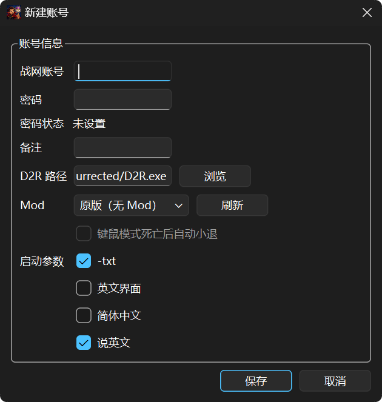
账号列表按「战网标识 - 备注」显示，例如「1A - 法师」；只填一项时只显示该项，两项都没填时显示「账号N」。开启「设置 → 战网标识打码」后，战网标识会打码，备注仍可区分账号。
更新游戏客户端
国服点「工具 → 更新游戏客户端」，国际服请自行登录战网更新，国际服工具菜单不显示这个入口。
- 先关闭这个国服安装目录里的所有游戏，并等本次启动或记录账号操作结束。
- 打开「工具 → 更新游戏客户端」，从已保存的国服战网号中选一个，再点窗口里的「更新游戏客户端」。列表同样显示「战网标识 - 备注」；Token 号不在列表里，需要重新登录的号不能选。
- 在战网里手动更新游戏，可以一直等待，不用在一分钟内完成。
- 更新结束后，回到 D2R-DK 点「完成更新并保存账号」。程序关闭战网和 Agent、保存这个号，提示保存成功后窗口关闭。
更新完成后必须点击“完成更新并保存账号”，账号才会写回。否则这个账号需要再走一次战网添加流程，才能启动游戏。
只关战网、更新窗口或 D2R-DK，都不能代替这个按钮。保存失败时窗口保留，按提示处理后再点一次。更新进行中不能切换区服；只打开窗口而未开始更新时，确认切服会关闭该窗口。
启动游戏
- 开一个号：点这个账号，再点「▶ 启动」。
- 多开：勾选要开的账号，再点「批量启动」。
进阶功能
宝宝巴士（Pro 功能）
主号建房、小号自动加房，用「下一局」这一个快捷键操作。
目前适配原版、YTE MOD 和红叶 MOD。如果你在使用中发现无法建房或者无法跟房，可以跟作者联系，提供 MOD 进行适配。
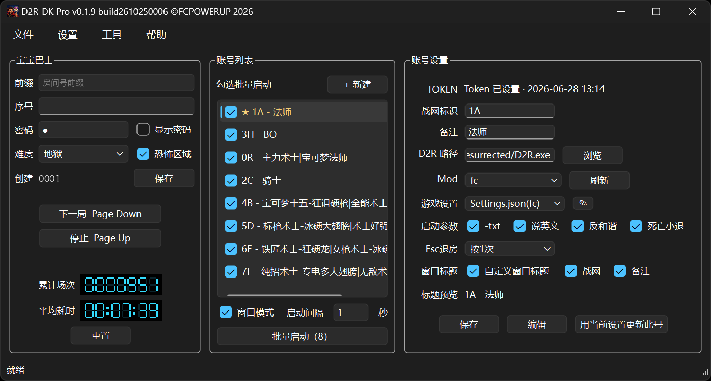
先设置：
- 在账号列表右键主号，选「设为宝宝巴士主号」。主号和小号都要用 D2R-DK 打开。
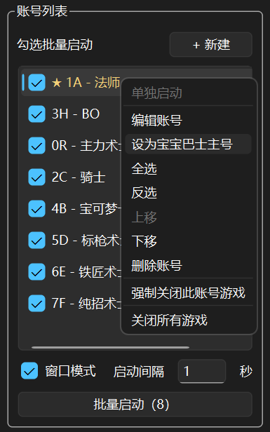
右键主号，选「设为宝宝巴士主号」 - 「工具 → 宝宝巴士」，填「前缀」（必填，只能是普通文字）。点「下一局」和「停止」按钮，再按一个单键来设快捷键（Esc 取消）。
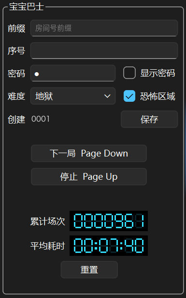
宝宝巴士面板：前缀、序号、下一局和停止两个快捷键
只让勾选的账号跟房
在「设置」里打开「宝宝巴士只跟勾选账号」，再在账号列表中勾选主号和需要跟房的小号。已经开着但没有勾选的账号不会退房或加入新房。
- 这个开关默认关闭，设置后会保存。
- 开启时，主号也必须勾选；一个账号都没勾选，或主号没勾选时，程序不会开始跟房。
- 关闭时，同区服中由 D2R-DK 打开的账号都可参与，不看账号列表里的勾选。
- 无论开关是否开启，都只带主号同区服的账号；国际服亚服、美服、欧服、测试服分别跟房。勾选变更从下一轮开始生效。
怎么用：
- 首次建房：主号和小号都进入到游戏大厅界面，按一下「下一局」快捷键。主号按预定的房间号建房，小号自动加入。
- 游戏里跟房：打完一局，不用退出房间，直接按「下一局」快捷键。主号自动退出房间、新建一个房间，房号在原有基础上 +1，小号自动加入。
一轮完成后，状态栏会提示宝宝巴士已完成跟房。这时不按「下一局」，就不会再建房。
一轮进行中想停下来，按「停止」快捷键。
运行时程序会自动按键和点击，期间不要动鼠标和键盘。只支持窗口模式，游戏全屏时会停止。
使用宝宝巴士时，如果有游戏窗口长期处于最小化状态，建议在 Windows「系统属性 → 性能 → 自定义」中，取消勾选「在最大化和最小化时显示窗口动画」。
使用非黑屏 MOD 时，不建议让小号窗口长期保持最小化。
出错时会提示跟房已停止并说明原因，后面还没处理的号就不会再动。这时要你手动把各个号的游戏画面处理到大厅，再按一次「下一局」，程序会重新建房、让小号加房。
反复出错，或者看不出弹窗写的原因，把弹窗里的原因和日志发给作者。
窗口布局
记住每个游戏窗口的位置、大小和是否最小化，一键摆好。
- 把游戏窗口摆好，不想看的号可以最小化。
- 「工具 → 窗口布局…」，第一行下拉框选一个布局，点「保存」。
- 以后点「加载」就摆回去。在「设置」里勾「窗口自动布局」，启动游戏后会按当前布局自动摆好。
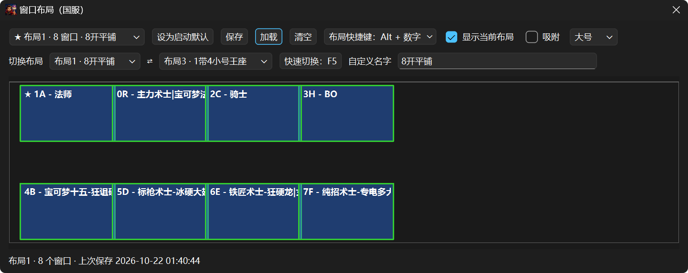
- 共 10 个布局，按主键盘顺序排：布局1～布局9、布局0。国服和国际服各一组。
- 「清空」只清这个布局的窗口位置。勾「显示当前布局」可以看保存时的预览。
部分窗口长时间最小化可能会卡死，这是游戏本身的 BUG。要不要把号最小化，请自己斟酌。
吸附到游戏窗口
勾「吸附」，布局窗口收成一条细条，放进游戏窗口的标题栏里，方便快速切换布局，或者在玩游戏时随手截图。
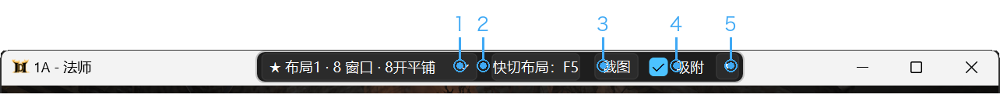
- 布局下拉框：选中哪个布局，马上加载，不用再点「加载」。
- 快切布局：F5这一项只显示现在设的切换快捷键。要改快捷键，先取消吸附，回原来的布局窗口里改。
- 截图：把当前游戏窗口的画面复制到剪贴板，提示 2 秒后消失。
- 吸附：取消勾选就回到原来的布局窗口。
- ▾：展开出「保存」「加载」「切换布局」和目标窗口。目标默认「大号」，可以改成「当前游戏窗口」。
游戏窗口最小化或关掉时，细条自己收起来。
自定义名字
第三行「自定义名字」输入名字，点「保存」。下拉框和托盘菜单会显示它，例如「布局4 · 8 窗口 · 宝可梦模式」。名字最多 16 个字；旁边的「清空」只清名字，不动窗口位置。
布局快捷键
有两种，可以同时用：
- 快速选择快捷键（第一行）：选「Alt + 数字」或「Ctrl + 数字」。之后按住 Alt（或 Ctrl）再按主键盘的 1～9、0，直接加载同号的布局。小键盘的数字不算。
- 快速切换快捷键（第二行）：在「切换布局」选两个布局，例如布局1 和布局3；点「快速切换快捷键」，按一个键或两个键的组合，例如 F5。之后每按一次，就在这两个布局之间来回切。
- 设好后点「保存快捷键设置」才生效；「清除快捷键」取消对应的快捷键。
- 快捷键只在 D2R-DK 或它开的游戏窗口在最前面时有效，不影响其他程序。
TZ / DC 监控
独立小窗，看恐怖地带（TZ）和黑毛（DC）的进度，边玩边看。
- 打开：「工具 → TZ / DC 监控」，或托盘右键。
- 每 60 秒自动刷新。「刷新」可以立刻更新，「暂停」和「继续」控制自动刷新。
- 「置顶」让小窗始终在最前。
- SC 普通，HC 专家，L 天梯，N 非天梯。
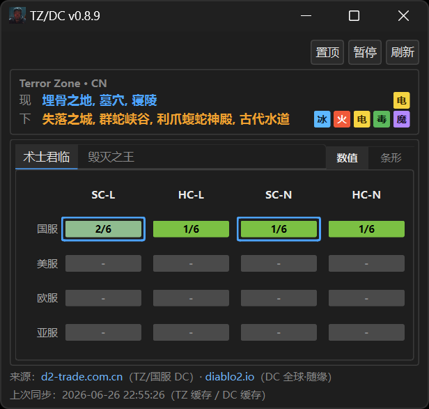
墨水屏推送（Pro 功能）
- 监控窗底部可以选把数据推送到墨水屏，需要已激活的 Pro 权限。
- 下一场没有更新时，程序会自动重新获取。
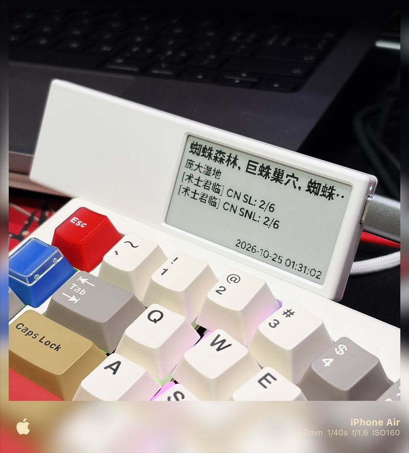
每号设置与键位
每个号单独保存画质和声音，启动时自动写回。
- 选中账号，启动游戏，调好画质。
- 回到 D2R-DK，点「用当前设置更新此号」。游戏开着也能点。
用 Mod 时，在「设置」里勾「Mod 独立 Settings」，每个 Mod 各存一份，切换 Mod 时设置跟着 Mod 走。
ESC 退房：账号设置里的「ESC退房」可选「原样」「按2次」「按1次」。只支持文件夹形式的 Mod，原版和打包成 .mpq 的 Mod 不能改。同一个游戏目录中使用相同 Mod 的账号共用选择；修改后从下一局起生效。
几个号用同一套键位：
- 在游戏「操作」页改好键位，按底部的「储存自订档」。
- 进入「选项 → 游戏选项」，把「预设按键设定」改成「自订」。
- 当前角色也要用：在「操作」页按底部的「预设」，弹出「载入预设值」，选「自订」，按「套用」。
- 回到 D2R-DK，选中账号，点「用当前设置更新此号」，画质和键位一起存给这个号。
死亡小退
角色死亡时，程序自动退出房间，保住佣兵和宝宝。代价是会损失经验。
- 账号设置里选了 Mod 后，才能勾「死亡小退」。原版没有这一项。
- 设置按 Mod 分开记。改了之后，要重新启动对应的游戏才生效。
- 只支持文件夹形式的 Mod。打包成
.mpq的 Mod 会提示「不支持mpq打包格式的mod」。 - 这是实验性功能。由于使用环境和 Mod 本身差异，不保证能 100% 生效，开启后有任何损失本程序不承担任何责任。
备份与迁移
换电脑时，在旧电脑用「文件 → 导出配置...」，在新电脑用「文件 → 导入配置...」。
- 仅导出设置：不带登录信息。新电脑上国服 Token 号要重新粘贴 Token，国服战网号要重新记录账号。
- 完整迁移：带上国服 Token 和有效的国服战网登录资料。Token 号导入后可直接启动；战网登录资料可能失效，导入后可能需要重新登录战网并记录账号。国际服的战网密码不带，要重新填。
导出时要设导出包密码：至少 12 位，同时有字母和数字，不能和程序锁密码相同。
完整迁移包里有 Token，请当作密码保管，不要发给别人。激活状态不随导出包走，换电脑后要重新激活。
距离上次备份超过 30 天，启动时会提醒备份。
激活（Pro 功能）
| 功能 | 基础功能 | Pro 高级功能 （激活后） |
|---|---|---|
| 单号启动 | ✓ | ✓ |
| 勾选 1～7 个账号批量启动 | ✓ | ✓ |
| 国服战网登录 | ✓ | ✓ |
| 每号游戏设置（画质、键位、Mod、启动参数） | ✓ | ✓ |
| 窗口布局 | ✓ | ✓ |
| TZ / DC 监控 | ✓ | ✓ |
| 死亡小退 | ✓ | ✓ |
| 自定义窗口标题 | ✓ | ✓ |
| 配置备份与迁移 | ✓ | ✓ |
| 8PP 批量多开（勾选 8 个及以上账号批量启动） | — | ✓ |
| 快速启动模式 | — | ✓ |
| 宝宝巴士 | — | ✓ |
| 墨水屏推送 | — | ✓ |
| 后续增加的高级功能 | — | ✓ |
不激活也能用基础功能。正式版无内置试用；向作者申请试用码后，同样要在「设置 → 激活…」里保存并验证。
- 「帮助 → 关于 D2R DK...」，扫「扫码加群」进群。或扫「微信赞赏码」，留言写上 QQ 或昵称。在群里联系作者，说明要哪一种。
- 新购提供月卡（31 天）、季度卡（93 天）、半年卡（183 天）和年卡（365 天）。月卡、季度卡不需要机器码。
- 半年卡、年卡、永久卡都绑定机器。新购半年卡或年卡时，打开「设置 → 激活…」，点「机器码」旁的「复制」，把机器码发给作者。永久卡只兼容已有激活码，当前不提供新购。
- 拿到激活码后，粘贴到「激活码」框，点「保存并验证」。通过后，「状态」会显示到期日；已有永久卡显示永久。
激活码要整行复制，不漏字，也不多出空格。未激活时，高级功能会提示「高级版功能，请激活后使用」。新码验证并保存成功后替换当前码；续费后使用作者新发的码，旧码的到期日不会自动延长。
窗口标题
账号设置里勾「自定义窗口标题」，再选是否带「战网」「备注」。下面的「标题预览」会显示游戏窗口的名字。
- 每个号的标题必须不同。宝宝巴士和批量启动靠标题找窗口。
- 不要粘贴 Tab 这类看不见的字符，否则宝宝巴士会报「账号退房方式无效」。
- 标题尽量写短，一眼能分清是哪个号。
强制关闭
窗口卡死、点不动时用。右键账号，选「强制关闭此账号游戏」，只关这一个号。
游戏会被直接结束，没存下的进度会丢失。窗口还能操作时，先在游戏里正常退出。
系统要求与依赖
- 系统：Windows 10 或 11，64 位。
- 游戏：已安装《暗黑破坏神 II：重制版》，且能在本机正常打开。
- 运行库：程序目前不内置 VC++ 运行库。提示缺少 VCRUNTIME140.dll 时，安装微软的 VC++ 2015-2022 x64 运行库。
- 权限：建议右键 exe，选「以管理员身份运行」。
- 放置位置：把 exe 放在固定文件夹，不用安装。首次运行后，同一文件夹会生成
D2R-DK.json、D2R-DK.lock.json、D2R-DK.ini和.bak备份文件，不要删，删了会丢账号。
常见问题
| 现象 | 怎么办 |
|---|---|
| 勾了 8 个以上，「批量启动」是灰的 | 8 个及以上需要已激活的 Pro 权限，未激活时提示「高级版功能，请激活后使用」。勾 7 个以内随时能批量启动。 |
| 批量开到一半想停 | 点「停止」，已经开的游戏不会关。 |
| Token 没有自动出现 | 程序不会自动抓 Token。「获取」只打开浏览器，要自己复制地址栏里 ST= 开头的整段，粘贴回去。 |
| Token 无效，或无法连接服务器 | Token 过期或没复制完整。重新登录网页，复制完整的 ST= 再试。「战网标识」只是备注，不能当 Token 用。 |
| 登录页提示要网易账号 | 在战网登录页底部点「无法登录？」，用网易账号找回战网账号和密码。 |
| 这是第三方工具，有风险吗 | 有账号风险，使用风险自负。 |
| 批量少开了几个 | 看账号名后的小字：「· 待设置」要补 Token 或游戏路径；「· 缺 settings」要先单独启动一次，再点「用当前设置更新此号」。 |
| 某个号闪退 | 右键该号，选「单独启动」重开。 |
| 提示缺 VCRUNTIME140.dll | 安装 VC++ 2015-2022 x64 运行库。 |
| 提示需要管理员权限 | 右键 exe，选「以管理员身份运行」。 |
| 窗口最小化后找不到了 | 看系统托盘，单击图标恢复。 |
| 各号画质串了 | 进这个号的游戏把画质调回来，再选中该号点「用当前设置更新此号」。 |
| 窗口位置乱了，或自动布局没生效 | 启动时不要切换窗口。确认已勾「窗口自动布局」，并且布局已经保存过。 |
| Mod 扫不出来 | Mod 要放在 D2R 游戏目录\mods\Mod名\Mod名.mpq，文件夹名和 .mpq 名一致，区分大小写。设好游戏路径后，点 Mod 旁的「刷新」。 |
| 忘了程序锁密码 | 找不回，只能重新开始。有导出包的话，可以导入。 |
| 宝宝巴士按「下一局」没反应 | 检查：前缀已填，两个快捷键都已设，主号已设且用 D2R-DK 打开，这一轮没有正在运行。 |
| 宝宝巴士停了，或提示「账号退房方式无效」 | 多半是两个号的窗口标题相同，或标题里混进了看不见的字符。 |
| 激活码无效 | 「格式无效」：检查是否漏字、多了空格。「与当前机器码不匹配」：把「设置 → 激活…」里现在的机器码发给作者重新发码。「已过期」：联系作者续费。 |
菜单及功能检索
文件
- 新建配置：添加账号，同「+ 新建」。
- 导出配置... / 导入配置...：备份或换电脑，见「备份与迁移」。
- 退出：关闭 D2R-DK。
设置
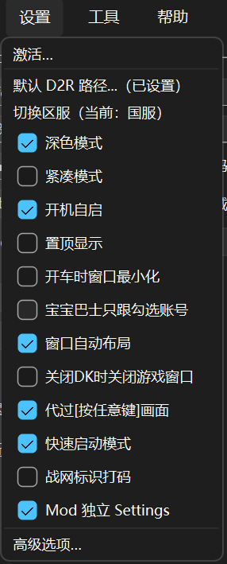
- 激活…：输入激活码，查看激活状态和有效期。
- 默认 D2R 路径...：设一次
D2R.exe，之后新建账号会自动填好。设好后这一项后面会括注「已设置」。 - 切换区服：在国服和国际服之间切换，括号里显示当前区服。两个区服各有一套账号。
- 以管理员运行：用管理员身份重新打开 D2R-DK。已经是管理员运行时没有这一项。
- 深色模式：界面用深色主题。
- 紧凑模式：收起右侧的账号设置。
- 开机自启：登录 Windows 时打开 D2R-DK，不会自动开游戏。
- 置顶显示：主窗口始终在最前面。
- 开车时窗口最小化：宝宝巴士运行时，游戏窗口自动最小化。
- 宝宝巴士只跟勾选账号：默认关闭。开启后只让勾选的主号和小号参与跟房，详见使用方法。
- 窗口自动布局：启动游戏后，按保存的布局摆放窗口。
- 关闭DK时关闭游戏窗口：点 × 时，同时关掉本工具开的游戏。
- 代过[按任意键]画面：自动跳过启动时的「按任意键」画面。批量启动时会自动打开。
- 快速启动模式：仅国服，Pro 功能。
- 战网标识打码：账号列表、更新窗口、标题预览及日志中的战网标识打码，备注仍显示。
- Mod 独立 Settings：每个 Mod 各存一份游戏设置，切换 Mod 时设置跟着 Mod 走。
- 高级选项…：打开高级设置，可显示日志窗口。
工具
工具菜单从上到下分三组：窗口布局、TZ / DC 监控、宝宝巴士；速查手册；更新游戏客户端（仅国服显示）。
- 窗口布局…：保存和加载游戏窗口位置。吸附的说明见「窗口布局」。
- TZ / DC 监控：打开小窗，看恐怖地带和黑毛进度。
- 宝宝巴士：打开宝宝巴士面板（Pro 功能）。面板开着时，这一项前面有勾。
- 速查手册：用浏览器打开暗黑破坏神 II 速查页。
- 更新游戏客户端：仅国服，手动更新后必须点「完成更新并保存账号」，见更新步骤。
帮助
- 检查更新…：查看有没有新版本。
- 关于 D2R DK...：看版本号，扫码加群或赞赏。
账号右键菜单
- 单独启动：只开这个号，不看勾选。
- 编辑账号：修改账号信息。
- 设为宝宝巴士主号（Pro 功能）：名字前显示 ★，名字变成金色。
- 全选、反选：勾选全部账号，或把勾选反过来。
- 上移、下移：调整账号顺序。
- 删除账号：删除这个账号。
- 强制关闭此账号游戏：见「强制关闭」。
- 关闭所有游戏：关掉当前区服里本工具开的游戏。
主界面按钮
- + 新建：添加账号。
- 窗口模式：所有号都以窗口方式打开。
- 启动间隔：批量时，每个号之间等几秒。
- ▶ 启动 / 批量启动（N）：勾 0 或 1 个时开选中的号，勾 2 个以上时批量开勾选的号。
- 停止：批量时出现，点后不再开剩余的号。
- 启动下一个：批量时出现，结束当前号的等待，开下一个。
- 用当前设置更新此号：把游戏现在的画质和键位存给选中的号。
更新记录
文档 v1.6.0
- 补充「宝宝巴士只跟勾选账号」设置开关的使用方法。
- 补充国服更新游戏客户端及必须手动保存账号的步骤，国际服自行在战网更新。
- 同步账号显示、ESC 退房和工具菜单分组。
- 同步 Pro 激活、试用码、新购四档及历史永久卡说明。
- 补齐 v0.1.9 的新增功能和改进记录，包括 ESC 退房、客户端更新、开机自启等。
v0.1.9
- 国服新增「战网登录」添加账号，与 Token 登录二选一；两者可并存，登录和建号都能用
- 新增宝宝巴士：主号建房、小号自动加房，可只跟勾选账号，并可选择开车时最小化窗口（Pro 功能）
- 新增 ESC 退房设置：文件夹形式的 Mod 可选「原样」「按2次」「按1次」，修改后从下一局起生效
- 新增国服「更新游戏客户端」入口，更新完成后可保存当前战网账号
- 窗口管理升级：布局改为 10 个，可设名字，记住最小化状态和窗口叠放顺序，支持数字键直接加载和两个布局来回切换，还能吸附到游戏窗口标题栏
- 大幅提升登录和建房速度
- 新增快速启动模式（Pro 功能，仅国服）
- 新增死亡小退，需使用文件夹形式的 Mod，不支持
.mpq打包格式 - 新增开机自启，登录 Windows 后打开 D2R-DK
- 新增右键「强制关闭此账号游戏」，可单独结束指定账号的游戏
- 支持游戏运行中保存当前画质和自订键位，无需先关闭游戏
- 更多设置按国服和国际服分别保存，包括启动间隔、自动布局、布局快捷键、自定义标题及 Mod 独立 Settings 等
- 配置保护升级：启动、退出和升级迁移前自动备份，损坏时尝试恢复；完整迁移可带上有效的国服战网登录资料，并增加 30 天备份提醒
更早的版本：文档 v1.5.0，以及 v0.1.8 至 v0.1.0
文档 v1.5.0
- 简版与详细版合并为一份
- 写明国际服战网密码不会写入导出包
v0.1.8
- 优化窗口布局和「代过[按任意键]画面」
v0.1.7
- 修复「代过[按任意键]画面」开关状态：国服和国际服分别保存
- 修复国际服账号列表显示问题
v0.1.6
- 优化自动窗口布局
v0.1.4
- Mod 独立 Settings
- 右键「关闭所有游戏」，设置「关闭DK时关闭游戏窗口」
- 获取 Token 改为调用系统默认浏览器
v0.1.3
- 新增国际服多开、速查手册、账号排序
- 右键「单独启动」；批量进行中主按钮变为「停止」
v0.1.2 与 v0.1.1
- 国服 Token 直启，每号独立设置，窗口布局，TZ / DC 监控，紧凑模式与托盘，配置加密
v0.1.0
- 国服 Token 直启多开，账号列表，Mod 下拉选择